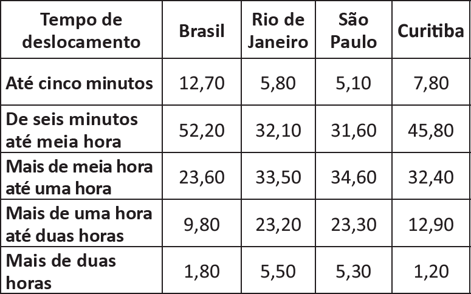

O quadro a seguir apresenta a proporção (%)
de trabalhadores por faixa de tempo gasto no
deslocamento casa-trabalho, no Brasil e em três
cidades brasileiras.

CENSO 2010/IBGE (adaptado).
Com base nos dados apresentados e considerando a
distribuição da população trabalhadora nas cidades e
as políticas públicas direcionadas à mobilidade urbana,
avalie as afirmações a seguir.
-
A distribuição das pessoas por faixa de tempo
de deslocamento casa-trabalho na região
metropolitana do Rio de Janeiro é próxima à que
se verifica em São Paulo, mas não em Curitiba e
na média brasileira.
-
Nas metrópoles, em geral, a maioria dos postos
de trabalho está localizada nas áreas urbanas
centrais, e as residências da população de baixa
renda estão concentradas em áreas irregulares
ou na periferia, o que aumenta o tempo gasto por
esta população no deslocamento casa-trabalho e
o custo do transporte.
-
As políticas públicas referentes a transportes
urbanos, como, por exemplo, Bilhete Único
e Veículo Leve sobre Trilhos (VLT), ao serem
implementadas, contribuem para redução do
tempo gasto no deslocamento casa-trabalho e
do custo do transporte.
É correto o que se afirma em
-
I, apenas.
-
III, apenas.
-
I e II, apenas.
-
II e III, apenas.
-
I, II e III.